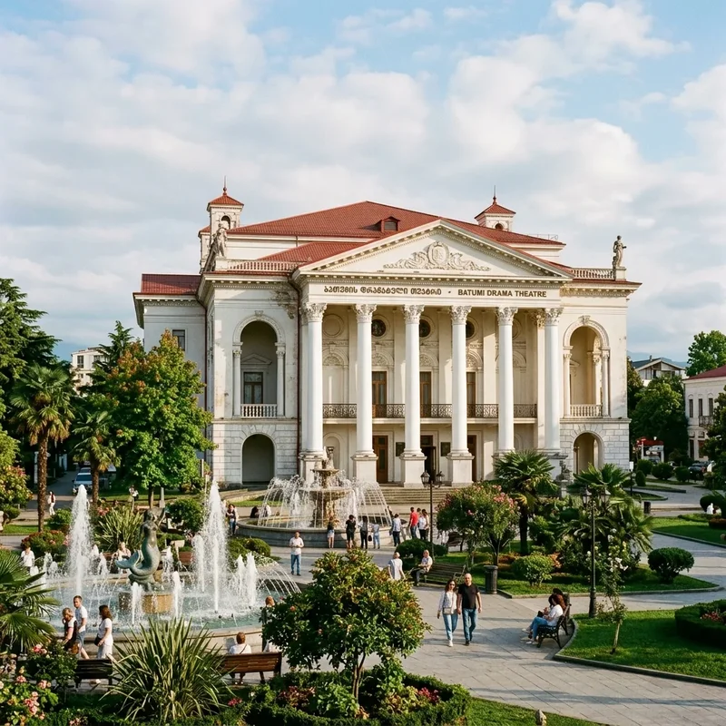
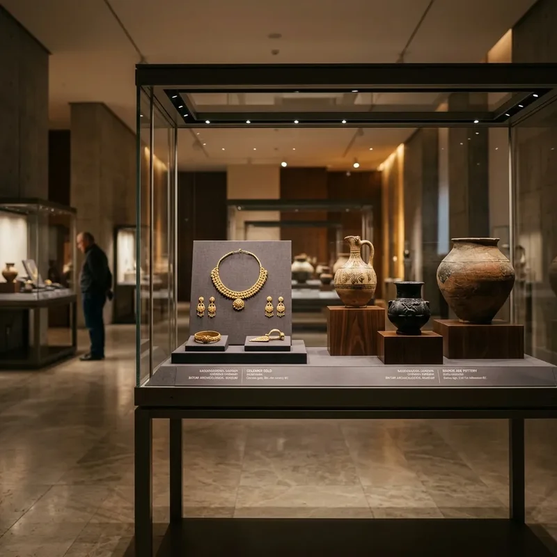

Karadeniz'in İncisi Batum'un Tarihi ve Turistik Zenginliklerini Keşfedin.
Batum, Gürcistan'ın Acara Özerk Cumhuriyeti'nin başkenti ve Karadeniz kıyısındaki en popüler turizm merkezlerinden biridir.
Otelimize yürüme mesafesinde bulunan birçok turistik nokta ile Batum'un kalbinde konaklamanın keyfini çıkarın.


Kavuşamayan aşıkları temsil eden bu ikonik çelik heykel, her akşam ışıklandırılarak büyüleyici bir gösteri sunar.

Dünyanın en büyük ve zengin botanik bahçelerinden biri olan bu alan, binlerce bitki türüne ev sahipliği yapar.

İtalyan esintileri taşıyan mimarisi, mozaikleri ve canlı müzikleriyle Batum'un en keyifli buluşma noktalarından biridir.

Batum'u kuş bakışı seyretmek için en iyi yol olan bu teleferik, şehirden Anuri Dağı'na eşsiz bir yolculuk sunar.

Roma döneminden kalan bu antik kale, Batum'un güneyinde yer alan en önemli tarihi yapılardan biridir.

Alfabe Kulesi ve Dönme Dolap'ın bulunduğu bu park, modern Batum'un kalbi sayılan popüler bir dinlenme alanıdır.

1880'lerde inşa edilen bu camii, ahşap süslemeleri ve renkli iç mimarisiyle şehrin kültürel çeşitliliğini yansıtır.

Gotik mimarisiyle dikkat çeken bu katedral, başlangıçta Katolik kilisesi olarak inşa edilmiş, günümüzde Ortodoks katedrali olarak hizmet vermektedir.

Avrupa Meydanı'nın merkezinde yükselen bu heykel, Yunan mitolojisindeki Altın Post efsanesini simgeler.

Klasik mimarisiyle göz kamaştıran bu yapı, şehrin en önemli sanat ve kültür merkezlerinden biridir.

Batum Bulvarı'nda yer alan bu fıskiyeler, akşam saatlerinde müzik ve ışık eşliğinde büyüleyici bir dans sunar.

Hem çocuklar hem de yetişkinler için eğlenceli anlar sunan bu merkezde, yunusların muhteşem gösterilerini izleyebilirsiniz.

Şehrin kalbinde yer alan bu huzurlu park, göl kenarında yürüyüş yapmak ve doğayla iç içe vakit geçirmek için idealdir.

Bölgenin antik tarihine ışık tutan müze, Tunç Çağı'ndan kalma eserler ve nadide koleksiyonlara ev sahipliği yapar.

130 metre yüksekliğindeki bu kule, Gürcü alfabesinin eşsiz karakterlerini ve DNA sarmalını andıran mimarisiyle modern Batum'un simgelerinden biridir.

1882 yılında inşa edilen bu tarihi fener, liman bölgesinde yer alır ve şehrin denizcilik geçmişine tanıklık eder.

1881 yılında kurulan ve 7 kilometre boyunca uzanan Batum Bulvarı, sahil şeridi ve modern parklarıyla şehrin ruhunu yansıtır.
Gürcü mutfağının eşsiz lezzetlerini keşfedin. Acaruli Haçapuri, Hinkali ve dünyaca ünlü Gürcü şarapları ile gastronomi yolculuğuna çıkın.


Işıltılı casinoları, seçkin sahil kulüpleri ve modern rooftop barlarıyla Batum, Karadeniz'in Las Vegas'ı olarak anılır.